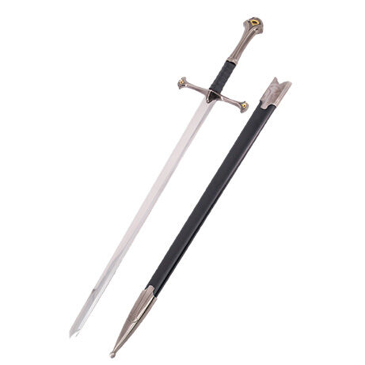
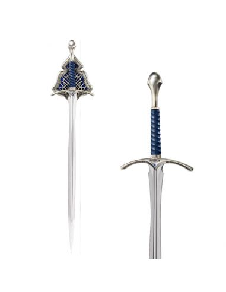
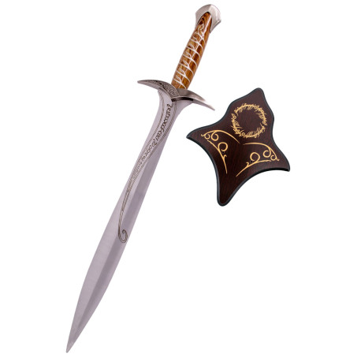
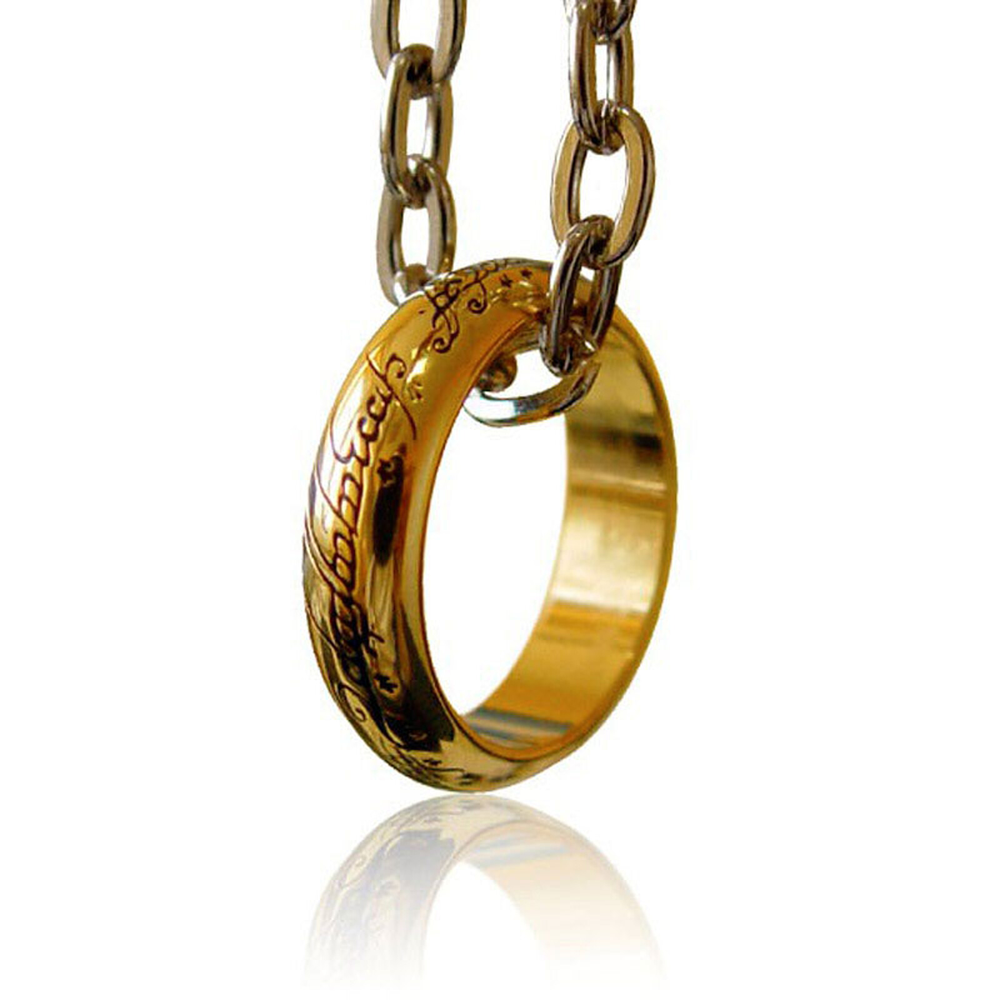

Productos
Espada de Aragorn
Réplica de Andúril, la legendaria espada reforjada de Aragorn, también conocida como "La Llama del Oeste".
Con 134 cm de longitud, esta impresionante pieza captura cada detalle de la original, desde su robusto filo
hasta los intrincados grabados élficos. Ideal para coleccionistas y amantes de la Tierra Media.
Precio: 400€
Espada de Gandalf
Réplica de Glamdring, la mítica espada del mago Gandalf, conocida como "Martillo de Enemigos". Esta edición especial,
forjada en acero de alta calidad, mide 120 cm y refleja el poder y sabiduría del portador de la vara y espada.
Una joya para cualquier fanático de la saga.
Precio: 190€
Espada de Frodo
Réplica de Dardo, la espada encantada de Frodo que brilla al detectar la presencia de orcos. Con un tamaño manejable
y detalles fieles a la película, esta espada es ideal para coleccionistas y fanáticos de los hobbits.
Precio: 80€
Anillo Único

Réplica del Anillo Único, forjado en los fuegos de Orodruin por Sauron. Este anillo de colección incluye una cadena
para colgarlo, replicando el estilo que usa Frodo en su épica travesía hacia Mordor. Un símbolo imprescindible
para los seguidores de la saga.
Precio: 30€
Mapa

Mapa detallado de la Tierra Media, abarcando desde el Bosque Negro hasta Gondor. Perfecto para guiar tus aventuras
imaginarias, esta réplica muestra todos los reinos, ciudades y caminos que recorrieron los héroes de la saga.
Ideal para enmarcar y decorar.
Precio: 20€